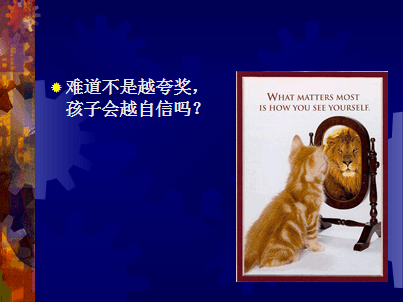
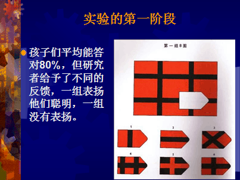

这只猫希望通过镜子看看自己的样子是什么，结果他看到的是狮子。那大家会认为这不是很好么，他不是很有自信了吗，其实这个镜子就是父母给孩子的反馈，他想知道自己究竟有多少能力。如果父母和老师给孩子大力的称赞，诸如天才、有才华，那么孩子就像那只猫一样，透过父母老师这面镜子照出一头狮子，会看到一个超级自信的自己。然而，实际上他的能力远远达不到，这样会造成什么结果呢？猫即使通过多次尝试也不会达到大狮子的能力，那么孩子呢？当这个假象被戳破的时候，他就不敢再去尝试暴露自己的实力了，但是他在家里没有外人情况下还是很享受非竞争情况下自己当狮子的状态，享受这种虚幻的强大自己。这就是我说的，我们过度夸奖孩子有天赋、有才华，而不是鼓励他通过努力获得成就，便会导致孩子变成这样。
接下来我们看一下斯坦福大学著名教授德韦克（Dweck）一辈子的研究，这项研究完全扭转了全世界教育学和心理学对于夸奖和鼓励的看法。陈述如下，如果孩子获得的鼓励和表扬跟他的实力不相符，当他面临失败和挑战的时候，他的自尊就会变得非常脆弱，就如第一个例子中的小男孩。你注意下报纸便会发现，在诸如北京、上海这样的城市里，有很多青少年在学习成绩不良的情况下尝试轻生或是有轻生的念头。其实很多孩子并不是成绩很差，有的相当不错，有的甚至是前几名，但是他们那怕是遭遇一次的失败，就会变得很脆弱。
我们来看德韦克教授的这项研究
先让两组五年级的孩子做智力测验，其中一组给予表扬，但是两组孩子做的正确率都差不多，都达到80%，大家看到这是一个推理题，觉得会简单，但是接下来会比较难，但是小孩子比较不容易得到答案，传统观念上来说得到表扬的孩子会更有自信，我们往下看

接下来第二阶段，这两组有两个任务，让他们二选一，一个任务很难，具有挑战性，可以学到东西；另一个任务比较简单，容易成功，但是学不到什么东西。那我们看一下他们选择的结果，被表扬的一组孩子65%的孩子倾向于选择那个比较简单的任务，而没有得到表扬的那组孩子中只有45%的人选择了比较简单的任务，哦我们很吃惊于被表扬的孩子思维更加保守，那原因是什么呢？
大家设想看，在孩子眼中大学教授给小朋友表扬，他们会觉得很高兴，如果选择难的问题，那么很容易暴露自己不是那么聪明，所以他们更倾向于选择一个更为稳妥的更简单的任务。这也是可以想到的。
第三阶段是给他们一组很难的问题，他们没有人答得出来。最后研究人员问孩子，你有多想知道这个问题的答案，回到家里会不会继续想去做。这个时候被表扬觉得这组题目没有什么意思，也根本不想回家继续去做，他们觉得自己想暴露了自己真实能力一样，感到倍受打击。反而另一组孩子更有兴趣去继续探索。
第四阶段，这个时候研究者让两组孩子做第一阶段难度相当的题目，按道理还有80%的正确率，但是结果是被表扬的一组小孩正确率显著低于第二组的，第一组的小孩在第一阶段的时候非常得意，但是在第三阶段却是备受打击，自信心很脆若，在这一阶段似乎自信心被击垮了很多，就很难静下心来做，所以正确率远不如第一组。这是很让人吃惊的，
但是最后一个阶段却让德韦克教授很伤心很难过，研究人员让他们告诉其他孩子自己的成绩，结果发现表扬组有40%的孩子说了谎，虚报了自己的成绩。而没被表扬的孩子只有10%撒谎。
如果孩子得到与自己实力不相符的表扬时，在平时面临挑战失败时会有一种脆弱的高自尊。平时很有自信，在遇到挑战于失败时就变得更脆弱。
这就是德韦克总结的两种思维模式。
- 成长的思维模式：有些人将努力视为激活能力的必要手段，因此努力和能力成正比，付出越多努力，能力也在提高。
- 僵固的思维模式：有些人认为能力是固定的，认为努力和能力是成反比的。